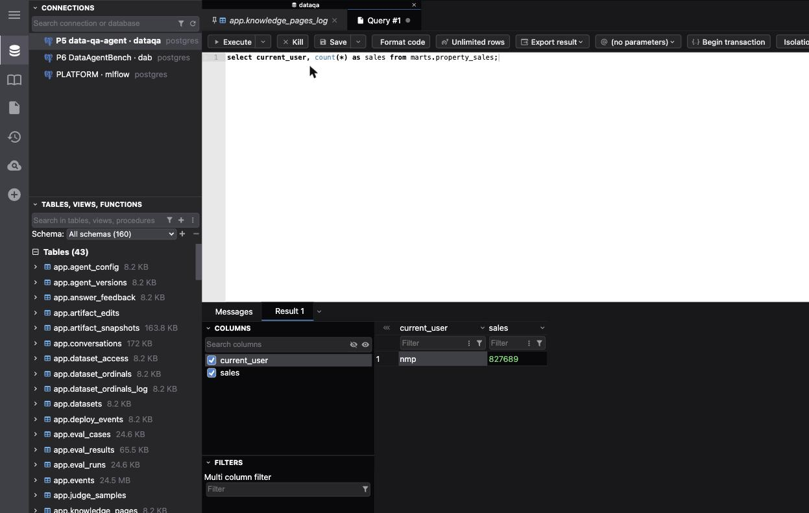

sql-frontend · investigation → built · 2026-09-22Browse and query the central Postgres. Pick a UI, don't build one.
Three project databases now live on one server (mlflow, dab, dataqa). You want a browser page where you can see every table and run SQL. Six ready-made tools were checked against current releases and one was trial-run against the live cluster. The recommendation is DbGate Community as a fourth compose service, with its connections generated from registry/projects.yaml — about half a day of work, no code of our own beyond a 30-line renderer.
marts.property_sales returned in the trial query as nmpnmp-central-dbgate-1 now serves http://127.0.0.1:5050 with connections rendered from the registry. Decisions and receipt at the bottom.
Requirements, in the platform's terms
These are the criteria the comparison scores. The last three come from decisions already made in s00–s02, not from taste.
Browse every table
All three databases, all schemas (data-qa has app raw staging marts; DAB has 2 813 tables in one schema), row counts, sizes, a data grid with filters and export.
A real SQL editor
Autocomplete against the live schema, multiple tabs, saved queries, results grid, CSV/JSON export, kill a running query.
Registry-driven connections
Nobody types a host or password into a UI. make db-init already knows every database and role (D13/D15); it should also emit the UI's connection list.
Lives in the compose stack
A service on the nmp-central network reaching postgres:5432; obeys D12 (validation project gets its own port); arm64 image; make up brings it along.
Safe by default
Bound to 127.0.0.1 only; no ad-hoc connections to other servers; superuser nmp is the admin identity (D16) so the UI uses it, scoped to one database per connection.
Maintained, light, free
Released in 2026, OSI licence, runs in well under 500 MB next to Postgres/MinIO/MLflow. Nice-to-have: an MCP endpoint, since M4 plans one.
Six options that already exist
Image sizes are the arm64 layer from Docker Hub. "Connections from env" is whether the container can be pointed at our three databases without anyone clicking through a setup wizard.
| A · DbGate CE | B · pgweb | C · CloudBeaver CE | D · Adminer / AdminNeo | E · pgAdmin 4 | F · Desktop client | |
|---|---|---|---|---|---|---|
| what it is | Node/Svelte web + desktop DB client, 19 engines, Postgres first-class | Single Go binary, Postgres-only explorer | DBeaver in the browser (Java) | One PHP file, classic admin pages | The official Postgres admin app (Python) | TablePlus · Postico · DBeaver · Beekeeper (none installed here) |
| latest release | 7.3.0 · 2026-09-15 | 0.17.0 · 2025-11-22 ~1 release/yr, one maintainer | 26.2.1 · 2026-09-21 | 6.0.1 / Neo 5.8.0 · Sep 2026 | monthly | — |
| licence | GPL-3 (Community; Premium tier exists) | MIT | Apache-2 | Apache-2 / GPL-2 | PostgreSQL | proprietary (TablePlus, Postico) or Apache-2 (DBeaver) |
| image (arm64) | 147 MB | 66 MB | 416 MB | 43 / 62 MB | 181 MB | n/a |
| RAM | 70 MB idle → 234 MB after loading DAB (measured) | ~20–40 MB (Go) | JVM; vendor says 2–4 GB hosts | ~30 MB (PHP) | 300 MB+ (Python + gunicorn) | host app |
| SQL editor | full autocomplete, tabs, format, kill, parameters, saved queries, charts | basic one editor, history, EXPLAIN, CSV/JSON/XML export | full DBeaver-grade | textarea | query tool heavy UI | best-in-class |
| data grid / edit | grid, filters, inline edit, import/export, ER diagram | read-only viewer, filters, export | grid, edit, ER | form-per-row edit | grid, edit | grid, edit |
| connections from env | yes CONNECTIONS=… + SERVER_x USER_x DATABASE_x ALLOWED_DATABASES_x READONLY_x; "Add connection" then disappears |
yes TOML bookmarks dir, --bookmarks-only --sessions |
partly workspace JSON + first-run admin wizard | plugin autologin needs a PHP plugin file | servers.json + master-password prompt per user | paste from .db-urls.env by hand |
| read-only switch | per connection READONLY_x=1 | global --readonly or per bookmark | per connection | no | no | per connection (most) |
| web login | optional LOGIN/PASSWORD; off = open on localhost | optional basic auth | mandatory admin account | DB credentials form | mandatory account | — |
| MCP / AI | MCP server in Community Docker since 7.2.3 (Jul 2026) — ties into M4 | no | AI assistant, bring your own key | no | no | varies |
| extras that matter here | built-in pg backup/restore (7.2.4), DuckDB support in the same client (value-invest, productivity-tracker use DuckDB) | Prometheus metrics endpoint | 20+ engines, RBAC | tiny | server admin (roles, vacuum, dashboards) | fastest UX, no container |
| verdict | recommend hits every requirement; trial passed | fallback if you want the smallest possible thing and can live without editing/autocomplete; slow cadence | overkill 3× the image, JVM, mandatory login | not an editor fine for a quick row poke, not for query work | overkill admin-oriented, clunky per-user setup | complement zero platform work, but not in the stack, not registry-driven, not shareable |
Not shortlisted: Metabase, Superset, Redash (BI dashboards, not editors; each wants its own metadata database); NocoDB/Baserow (Airtable-style, hide SQL); Outerbase Studio (Postgres support still labelled beta); SQLPad (unmaintained); Hasura/Directus (API layers, not editors); Drizzle/Prisma Studio (tied to an ORM project).
The trial against the live cluster

127.0.0.1:5050, connection P5 data-qa-agent · dataqa: sidebar lists app.* tables with sizes; the query tab returns nmp · 827689 — the same count the data-qa API showed for user1 after the M3 cut-over.What was done
docker run --network nmp-central -p 127.0.0.1:5050:3000 dbgate/dbgate:7.3.0withCONNECTIONS=mlflow,dab,dataqaand per-connectionSERVER_x=postgres USER_x=nmp DATABASE_x=… ALLOWED_DATABASES_x=…— exactly the shape a registry renderer would emit.- All three connections appeared with their labels; no wizard, no "add connection" button (env-defined lists lock it, which is what we want).
- Opened a data-qa table in the grid, ran a query, switched to DAB with
USE_SEPARATE_SCHEMAS_dab=1(schemas load lazily; 2 813 tables did not stall the UI). - Memory 70 MB idle, 234 MB after the DAB metadata load. CPU idle 0.05 %.
What was noticed
- First visit asks about anonymous analytics (declined). Worth pre-setting via
SETTINGS_…if a key exists; otherwise a one-time click. - An Upgrade button sits in the toolbar (Premium features: editable query results, AI chat). Cosmetic.
- With separate schemas on, DAB opens on
public(pgvector's functions); you pickdataagentbenchfrom the schema dropdown. Could be avoided by dropping the flag — the trade-off is a slower first load. - Env-defined connections are read at container start, so a registry change needs
make db-initthen a restart of the service — the plan folds that into the target.
How it sits in the platform
One new compose service; the registry stays the source of truth; nothing a sibling has to change.
docker-compose.yml — the new service
dbgate:
image: dbgate/dbgate:7.3.0 # pin; bump deliberately like mlflow
env_file:
- path: .dbgate.env # written by `make db-init`
required: false # first `up` before db-init still starts
ports:
- "127.0.0.1:${DBGATE_PORT:-5050}:3000" # host-only
depends_on:
postgres: { condition: service_healthy }
healthcheck:
test: ["CMD", "wget", "-qO-", "http://localhost:3000/"]
interval: 10s
timeout: 5s
retries: 12
restart: unless-stopped.dbgate.env — rendered from the registry (gitignored)
# generated by scripts/db_init.py — do not edit
CONNECTIONS=mlflow,dab,dataqa
LABEL_dab=P6 DataAgentBench · dab
ENGINE_dab=postgres@dbgate-plugin-postgres
SERVER_dab=postgres
PORT_dab=5432
USER_dab=nmp
PASSWORD_dab=nmp
DATABASE_dab=dab
ALLOWED_DATABASES_dab=dab
USE_SEPARATE_SCHEMAS_dab=1
# … same block for mlflow and dataqascripts/db_init.py — one more renderer
def render_dbgate_env(reg, projects, readonly=False) -> str:
"""Connection list for the dbgate service, one per project database.
Superuser nmp (D16), fenced to that database; env read at container start."""
ids = [p.database.name for p in projects]
out = ["# generated by scripts/db_init.py — do not edit",
f"CONNECTIONS={','.join(ids)}"]
for p in projects:
db = p.database
out += [f"LABEL_{db.name}={p.id} {p.name} · {db.name}",
f"ENGINE_{db.name}=postgres@dbgate-plugin-postgres",
f"SERVER_{db.name}=postgres", f"PORT_{db.name}=5432",
f"USER_{db.name}={reg.postgres_superuser}",
f"PASSWORD_{db.name}={superuser_password(reg)}",
f"DATABASE_{db.name}={db.name}",
f"ALLOWED_DATABASES_{db.name}={db.name}"]
if readonly: out.append(f"READONLY_{db.name}=1")
if db.big: out.append(f"USE_SEPARATE_SCHEMAS_{db.name}=1")
return "\n".join(out) + "\n"Pure function, unit-tested next to render_env. The big flag is one optional registry key (database.ui_separate_schemas: true) so DAB gets lazy schema loading and the others do not — or drop the flag entirely and accept a slower first DAB load.
Makefile
db-init: … && $(COMPOSE) up -d --no-deps dbgate # reload connections
db-ui: open http://127.0.0.1:$(DBGATE_PORT) # convenience
status: + one line: DB UI http://127.0.0.1:5050 (healthy|down)
mode: validation → DBGATE_PORT=15050 (D12)Build steps
DBGATE_PORT in .env.example; Makefile validation block exports 15050; .gitignore gets .dbgate.env. ~1 hrender_dbgate_env in db_init.py, written on every run beside .db-urls.env; --dbgate-readonly flag; tests in tests/test_db_init.py (labels, one connection per db, superuser identity, readonly flag, big-schema flag). ~1.5 hdb-init restarts the service; status prints the URL and health; CI stack job asserts the healthcheck passes after db-init (D12 ports). ~1 hmake db-psql. Runbook section in docs/runbooks/central-postgres.md; README; platform-db skill mentions the URL. ~45 minmake up · db-init · check, open the UI, run one query per database; no-mistakes on sql-frontend, PR for your review (you said the central app should not auto-deploy — nothing here touches AWS). ~30 min + pipelinedocker rm -f dbgate-trial once the compose service is up on the same port. 1 minRisks and how they are handled
Superuser in a browser tab
The UI connects as nmp (D16). Mitigations: published on 127.0.0.1 only; ALLOWED_DATABASES fences each connection to its own database; optional READONLY twin; SHELL_CONNECTION stays off so no one can point it at another server; backups exist (make db-backup).
Env read once at start
Adding a project database means make db-init → the target restarts dbgate. Documented in the runbook; status shows the connection count so a stale list is visible.
GPL-3 image
We run it, we don't ship it or link to it. No obligation attaches. Premium nags are cosmetic; no feature we need is Premium-only.
Port choice
5050 is free now (checked), memorable beside 5000/5432, and pgAdmin's conventional port so nobody is surprised. 3000 (DbGate's default) collides with half the Vite/Next dev servers in the portfolio.
Validation mode
D12 already offsets ports by 10 000; 15050 follows the pattern. CI runs the healthcheck only — no browser.
AWS
Out of scope (D19: no project databases in AWS). The service is not in compose.aws.yml.
sql-frontendWhat was decided and built
Every question above was answered with the recommended option; the six scope items were all submitted and built. Receipt: ai_specs/s04_db_ui.md; decisions recorded as D20–D24 in AGENTS.md.
| ID | Decision | Where it landed |
|---|---|---|
| D20 | DbGate Community as compose service dbgate, pinned 7.3.0 | docker-compose.yml |
| D21 | Port 5050; validation mode 15050 | Makefile, .env.example, tests/test_make_mode.py |
| D22 | One read-write connection per database as nmp, fenced with ALLOWED_DATABASES; rendered from the registry; --dbgate-readonly flips all; ui_separate_schemas: true for DAB | scripts/db_init.py render_dbgate_env, scripts/_registry.py, registry/projects.yaml, tests/test_db_init.py |
| D23 | No web login; published on 127.0.0.1 only | docker-compose.yml |
| D24 | MCP server off; M4 decides | AGENTS.md |
| S1–S6 | service · renderer + tests · make/status/CI · PLATFORM.md/runbooks/README/skill · no-mistakes + PR · trial removed | all addressed — see the receipt |
make db-ui → http://127.0.0.1:5050. After adding a database to the registry, make db-init re-renders the connections and reloads the service; make status shows the count.Checked today
- DbGate env-variable reference (connections,
READONLY_,ALLOWED_DATABASES_,USE_SEPARATE_SCHEMAS_,LOGIN/PASSWORD,SHELL_CONNECTION): docs.dbgate.io - DbGate news — 7.3.0 (2026-09-15), MCP server in Community Docker 7.2.3 (2026-07-21), pg backup/restore 7.2.4: dbgate.io/news · vendor feature matrix
- pgweb CLI options and bookmarks: github.com/sosedoff/pgweb · releases (0.17.0)
- CloudBeaver Docker deployment: wiki
- Adminer / AdminNeo images: hub.docker.com/_/adminer · adminneo-org/docker
- Third-party round-ups used for the long list only: sliplane · dbeverywhere · queryglow
- Image sizes and dates: Docker Hub tag API, arm64 layer, queried 2026-09-22. RAM:
docker statson the trial container.